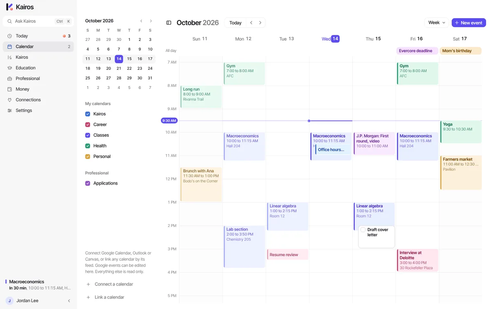

Calendar
Every calendar in one view.
Day, week, month and agenda. Google Calendar works both ways: create, move or delete an event in Kairos and it changes in Google. Outlook and any iCal link sit beside your own events, read only. Type "study Thursday 7 to 9" and Kairos puts it at the right time.
- Drag to move, drag the edge to resize
- A reminder before each event, 10 minutes by default
- D, W, M and A switch the view
